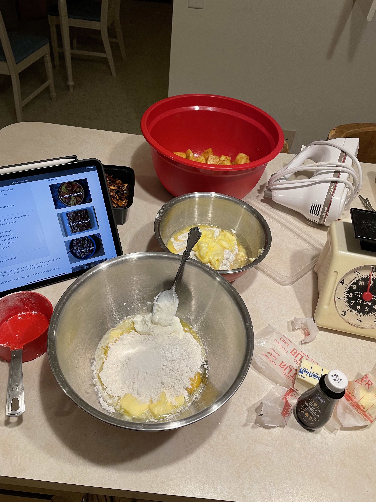
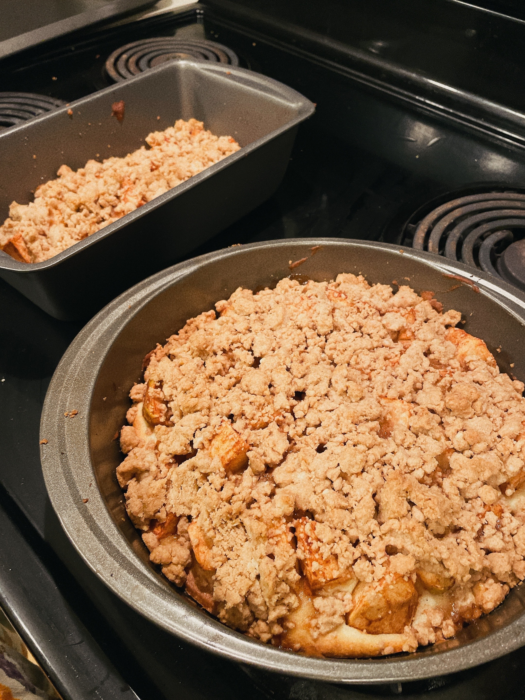
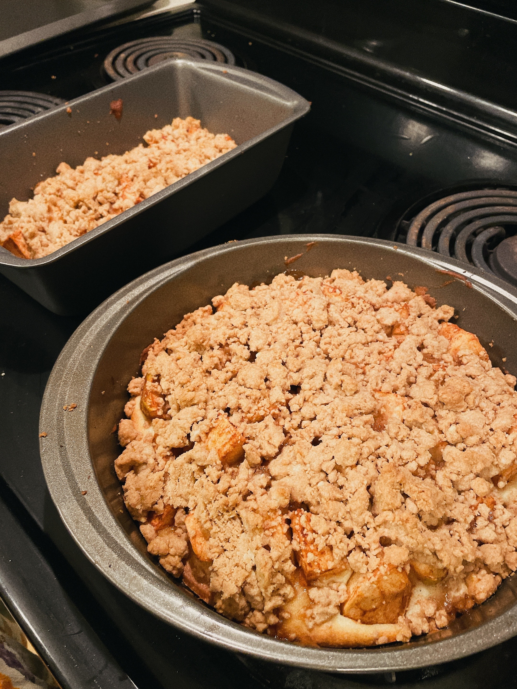

My roommate shared this recipe with me, telling me it was her taste of home, a flavor she has always loved when she was growing up. Baking this cake was an absolute delight. With the baked apples and heavenly cinnimon, my kitchen smelled like the most beaultiful day of Autumn. What's more, is that the cake itself tastes like a warm hug.
 

RECIPE: APPLES 1 pound apples (3 medium or 2 large), peeled if you wish, cored, cut into 1/2-inch wedges Juice of half a lemon 1 teaspoon ground cinnamon 1 tablespoon granulated sugar CRUMBS 1/2 cup (4 ounces or 115 grams) unsalted butter, melted 1/3 cup (65 grams) light or dark brown sugar 1/3 cup (65 grams) granulated sugar 1 teaspoon ground cinnamon 1/4 teaspoon kosher salt 1 1/3 cups (175 grams) all-purpose flour CAKE 6 tablespoons (85 grams) unsalted butter, softened 1/2 cup (100 grams) granulated sugar 1 large egg 1/3 cup (80 grams) sour cream 1 teaspoon (5 ml) vanilla extract 1 cup (130 grams) all-purpose flour 1 1/4 teaspoon baking powder 3/4 teaspoon kosher salt FINISH Powdered sugar, for dusting